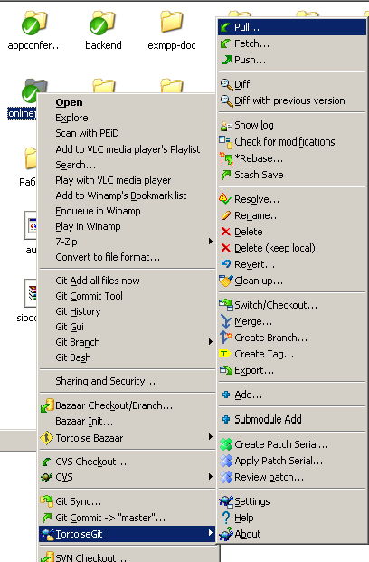
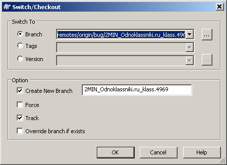
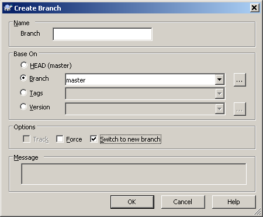

Работа с Git репозиториями
Почему Git
Краткий ответ: потому что не появляются задержки от работы с системой контроля версий.
Git хранит всё локально, включая историю, ветки, коммиты и позволяет переключаться между всем добром без обращения к сети.
Авторизация в GIT производится по персональному ключу а не паролю, который кешируется на некоторое время на стороне клиента, а не запоминается навсегда в настройках клиента.
GIT позволяет легко работать с ветками, без видоизменений раскладки репозитория, и древесный просмотр изменений позволяет видеть что из какой ветки пришло.
Более подробно можно прочитать http://habrahabr.ru/blogs/Git/104198/
Общие сведения о Git
Подробно о работе с Git, что это такое можно прочитать в Git Book по адресу http://book.git-scm.com/
В классических VCS (Version Control System) (CVS, SVN), в рабочей копии хранится текущее состояние репозитория, и базовая копия текущей ревизии. На сервере хранятся все ревизии в виде изменений от предыдущей, либо в виде полных копий каждой ревизии с вычислением разницы по запросу. Все ревизии нумеруются по порядку начиная от первой.
В случае CVS хранятся изменения и нумерая по каждому файлу независимо, в случае SVN, нумеруются изменения репозитория.
Так как SVN хранит только изменения всего репозитория, «ветки» в нем реализуются через специальную организацию файлов в хранилище. Классически, это /trunk/ для последнего кода, /branch/somename/ для веток. Для создания ветки, делается копия /trunk/ в /branch/somename/, над которым уже работает разработчик.
При этом, при каждом коммите, идёт обращение к центральному репозиторию, для сохранения изменения, отрабатывают скрипты на сервере, идет непрерывная нумерация изменений, запрос истории так же требует обращения на сервер и т.д.
Git относится к классу DVCS (Distributed Version Control System). При этом рабочая копия содержит все коммиты, историю, ветки, всё необходимое для ведения разработки без обращения к какому-либо серверу. Для синхронизации изменений между разными копиями репозитория, в нужный момент делается pull чтобы скопировать изменения удалённого репозитория к себе, либо push чтобы скопировать локальные изменения в удалённый репозиторий. В случае с Git, каждый коммит имеет уникальный ID в виде хеша, содержащий в себе все файлы, относящиеся к нему.
Каждый коммит имеет один коммит-родитель, и, возможно, коммит-источник слияния. Таким образом, коммиты представляют собой дерево наборов файлов. «Веткой» является указатель на какой-либо коммит. Таким образом, чтобы создать ветку, нужно просто дать имя какому-либо коммиту. Чтобы слить две ветки, одна из которых начинается с конца другой, можно просто передвинуть указатель второй ветки на новый коммит (это называется Fast-Forward).
Чтобы поддерживать «плоскую» основную ветку (master), используется техника ребейза веток перед слиянием, и слияение без fast-forward'а.
Rebase означает смену родителя ветки на новый коммит. При ребейзе все изменения, внесенные в данной ветке, откатываются назад и сохраняются в виде изменений, внесенных каждым коммитом; после чего указатель ветки переносится на новое начало, и на него последовательно начинают применяться изменения. Если конфликтов нет, то изменения накладываются автоматически, после чего ветка представляет собой набор изменений относительно нового начала.
Если теперь сделать слияние этой ветки с исходной, указатель головы исходной ветки будет просто передвинут на новое место, и мы потеряем информацию о том, что вообще существовала новая ветка. Именно поэтому используется слияние без fast-forward'а. При этом, даже если новая ветка начинается с конца предыдущей, создаётся специальный merge-commit, содержащий информацию о том, что в этом месте сливается текущая ветка с дополнительной.
Подробнее о том, что такое rebase в картиках тут: http://book.git-scm.com/4_rebasing.html
Алгоритм работы над задачей
Стандартный алгоритм работы над какой-либо задачей выглядит так:
- Создаётся ветка, основывающаяся на последней копии master ветки. Название новой ветки содержит класс задачи, краткое описание, номер задачи в БТ. Например feature/sessions_add_datetime_filter.5503
- Все изменения производятся внутри этой ветки. При каждом атомарном логическом изменении (например, добавили плагин – закоммитили добавление; поправили API одной функции во всех местах – закоммитили и тп) создаётся свой коммит. Это позволяет разделять какие были изменения, упрощается чтение и проверка на ошибки процесса разработки.
- После того как код в ветке сделан и отлажен, все изменения закоммичены, данная ветка ребейзится относительно последнего мастера, и пушится в центральный репозиторий.
- Второй человек, работающий над тем же проектом, делает к себе pull центрального репозитория. Если он уже смотрел – то удаляет свою локальную копию ветки, после чего переключается на указанную ветку. Прочитывает код, проверяет его работоспособность, после чего либо отдаёт на доработку, если там обнаружены проблемы, либо делает еще раз rebase поверх мастера, и слияние ветки с мастером.
- После слияния с мастером, ревьюер пушит новый мастер в центральный репозиторий, удаляет у себя локальную ветку задачи, пушит в мастер удаление ветки задачи.
- Разработчик удаляет локальную ветку задачи после того как задача была закрыта и изменения попали в master.
Правила ведения чистых коммитов
Все коммиты, которые попадают в центральную ветку, должны следовать следующим правилам:
- Автором должен быть прописан разработчик – Имя, Фамилия, рабочий e-mail.
- Текст комментария должен содержать краткое описание изменения. Для зарубежных проектов описание обязано быть на английском языке, для проектов российского бранча приемлемо комментировать на русском.
- Коммит не должен содержать в себе файлы, не относящиеся к изменениям. Если ваша IDE, OS, какой-то плагин какому-либо софту использующемуся при разработке создают технические файлы, либо добавьте их в .gitignore, либо не добавляйте к коммиту, либо удаляйте перед коммитом.
- Коммит не должен добавлять/убирать пустые строки, менять пробелы на табы и наоборот, менять число пробелов и т. п. нигде, кроме случаев, относящихся к сути коммита. То есть при рефакторинге это нормально, но если ваш редактор поменял во всем файлые пробелы на табы или наоборот – меняйте настройки редактора или перед коммитом приводите всё к виду «как было».
- Стиль исходного кода и отступов должен совпадать с текстом вокруг. То есть, если всюду в файле используются табы для отступа, не следует вставлять еще один case выровненный пробелами.
- Минимизация конфликтов. При добавлении кода следует стараться форматировать код так, чтобы модификация его приводила к минимуму конфликтов при слиянии.
Работа под Windows
Для работы с Git под Windows самое удобное – использовать TortoiseGit. Однако следует знать, что на 2017 год есть более удобный инструмент - SmartGit.
Подготовка к работе
- Устанавливается putty со страницы http://www.chiark.greenend.org.uk/~sgtatham/putty/
Лучше всего ставить полный пакет, со всеми программами. По надобятся как минимум plink, puttygen.
- Устанавливается msysGit из проекта http://code.google.com/p/msysgit/
Выбрать опции при установке «Add “Git Bash here”», «Run Git from the Windows Command Prompt», «Use Windows style line endings», когда спросит – дать путь до plink.exe
- Устанавливается TortoiseGit из проекта http://code.google.com/p/tortoisegit/
После установки зайти в TortoiseGit → Settings → Git → Config, убедиться что путь до msysgit задан, и что опции AutoCRLF и SafeCRLF установлены, настроены имя, фамилия, email разработчика.
- С помощью puttygen создаётся пара приватный+публичный ключ.
Публичный ключ высылается админам для добавления в доступы репозиториев и серверов.
Приватный ключ добавляется в pagent через клик правой кнопкой → add key.
Получение репозитория
В папке, где будут размещаться все рабочие проекты, жмём
Правой кнопкой→TortoiseGit→Clone, вводим адрес центрального репозитория
ssh://git@СЕРВЕР:ПОРТ/РЕПОЗИТОРИЙ.git
В поле «Load Putty Key» выбираем путь до приватного ключа.
Основные используемые функции
При работе используются либо консольные утилиты, аналогично linux, либо графический интерфейс.
- Обновление текущей ветки из центрального репозитория:
В контекстном меню папки с исходниками TortoiseGit->Pull

- Отправка текущей ветки в центральный репозиторий:
В контекстном меню TortoiseGit→Push
Выбираем в Local сперва master, потом нашу текущую ветку.
Remote заполняется при этом автоматически.
Название remote ветки должно быть идентично local
- Переключение на некоторую ветку:
В контекстном меню TortoiseGit→Switch/Checkout
В меню Branch выбрать remotes/origin/<нужная ветка>
[v] «Create new branch», название <нужная ветка>, [v] «Track»

- Создание новой ветки
Контекстное меню→TortoiseGit→Create Branch
В Name в Branch вводим нужное название ветки
Чтобы ветка базировалась от текущей, в Base On выбираем HEAD
Чтобы ветка базировалась от мастера, выбираем Branch, в списке master.
Ставим [v] Switch to new branch чтобы сразу переключиться на ветку.

- Удаление веток
Открываем меню зажав кнопку Shift → TortoiseGit → Browse Reference
в разделе heads лежат локальные ветки, в разделе remotes\origin удалённые.
Выбираем нужную ветку, жмём правой кнопкой → Delete Remote Branch
Для локальной ветки, соответственно, Delete Branch.
- Слияние ветки с текущей
Контекстное меню → TortoiseGit → Merge
выбираем Branch который нужно слить с текущей веткой
ставим обязательно галочку «No fast forward», Merge message не трогаем.
- Просмотр и сохранение изменений
Файлы с изменениями помечены красными восклицательными знаками.
Чтобы посмотреть общую картину изменений,
Меню→Git Commit -> “ветка”
Внизу список изменений в репозитории, обязательно нажимать галочку «View patch» и проверять изменения на предмет соответствия Правилам ведения чистых коммитов.
Стандартные процедуры работы
- «Начало работы над задачей»
Выполняется перед началом работы над задачей. Дерево должно быть без изменений.
Меню → TortoiseGit → Switch/Checkout,
Branch: master
Меню → TortoiseGit → Pull
Меню → TortoiseGit → Create Branch
Name Branch: название новой ветки
Base On: HEAD (master)
[x] Switch to new branch
- «Коммит очередного кусочка работы»
Выполняется после выполнения некого изменения, суть которого целостная.
Меню → Git commit -> “имя ветки”
Отметить файлы, только нужные для данного конкретного коммита
Обязательно щелкнуть на «View Patch», и убедиться
в соответствии правилам ведения чистых коммита
В message ввести описание изменения, соответствующее правилам
- «Отправка ветки на центральный репозиторий»
Выполняется после завершения работы, либо в конце каждого дня (чтобы был бакап на сервере), либо если нужно какие-то изменения показать коллеге.
Меню → TortoiseGit → Push
Выбираем в Local сперва master, потом нашу текущую ветку.
Remote заполняется при этом автоматически.
Название remote ветки должно быть идентично local
Не следует делать push после каждого коммита, так как это потребует доступа до удалённого сервера, и, соответственно, времени, потраченного впустую.
- «Ребейз относительно мастера»
Выполняется перед заливкой на сервер законченной задачи, когда все изменения уже закоммичены.
Меню → Git Sync
Local branch: master
Remote branch: master
Правая стрелочка вниз у первой кнопки (Pull по умолчанию), Fetch
Меню → TortoiseGit → *Rebase
Branch: текущая ветка
UpStream: master
Если будут конфликты – разобраться с ними через вкладку «Conflict File»
На выбор, правой кнопкой файла, утилиты
Edit Conflicts – позволяет по каждому расхождению выбрать
использовать версию какую блока
Resolve Conflicts Using
theirs – использовать версию мастера
mine – использовать версию текущей ветки
Open – открыть в редакторе, и исправить вручную
После исправления сделать Resolve
После исправления всех конфликтов нажать Commit
После ребейза нажать Done
- «Кратковременное сохранение состояния изменений»
Выполняется, если требуется временно приостановить работу над текущей веткой на короткое время (например, на ревью, или чтобы сделать какую-либо двухминутную задачу).
Меню → TortoiseGit → Stash Save
После этого дерево чисто, можно переключиться на другую ветку/мастер и так далее, поработать, после чего восстановить состояние, если переключиться обратно на рабочую ветку, и сделать
Меню → TortoiseGit → Stash Pop
Тем самым восстановив состояние изменения.
- «Длительное сохранение состояния изменений»
Выполняется в конце рабочих суток, чтобы даже частичные изменения были забакаплены; либо при необходимости срочно переключиться на решение другой задачи, которая может занять значительно больше 5-10 минут.
Меню → Git Commit -> “ветка”
Отмечаем все-все изменения (Select/Deselect All)
В текст сообщения пишем «Partial commit»
Позже, для возврата к тому же состоянию как было до, переключаемся на рабочую ветку, и делаем
Меню → TortoiseGit → Show Log
Выделяем коммит, который идет в дереве сразу перед «Partial commit»
Правой кнопкой → Reset <ветка> to this
Reset type: Mixed
- «Ревью ветки»
Выполняется на чистом дереве, временно сохраните изменения согласно пункта 5, если требуется.
Меню → TortoiseGit → Switch/Checkout
Branch: master
Меню → TortoiseGit → Pull
Меню → TortoiseGit → Switch/Checkout
Branch: remotes/origin/нужнаяветка
[x] Create new branch: нужнаяветка
[x] Force
[x] Track
[x] Override branch if exists
Меню → TortoiseGit → *Rebase
Branch: нужнаяветка
UpStream: master
Ветка ветка должна быть «up to date» или заребейзится без конфликтов.
== Анализируем изменения просмотром лога изменений через
Меню → TortoiseGit → Show log
и смотрим изменения от master до последнего
== Смотрим общее изменение относительно мастера
Меню → TortoiseGit → Diff with previous version
Version 1: HEAD
Version 2: master
== если всё хорошо, делаем
Меню → TortoiseGit → Switch/Checkout
Branch: master
Меню → TortoiseGit → Merge
From: нужнаяветка
[x] No fast forward
Сообщение не редактируем.
Меню → TortoiseGit → Push
И удаляем ветки:
Shift + Меню → TortoiseGit → Browser Reference
в дереве слева Refs => heads => находим ветку, правой кнопкой, Delete branch
в дереве слева remotes => origin => находим ветку, правой кнопкой,
Delete remote branch
Работа под Linux
Подготовка к работе
- Устанавливаются системные пакеты ssh-client и git
- Создаётся приватный ключ:
ssh-keygen -t dsa -C "Ivan Petrov <work@mail>"
- Настраивается ФИО и Емейл автора:
git config --global user.name "Ivan Petrov"
git config --global user.email work@mail"
- Админу отсылается файл ~/.ssh/id_dsa.pub для прописывания доступов до репозиториев и серверов.
Получение репозитория
Переходим в директорию для работы, и запускаем
git clone ssh://git@СЕРВЕР:ПОРТ/РЕПОЗИТОРИЙ.git
Основные используемые функции
- Обновление текущей ветки из центрального репозитория:
git pull
- Отправка текущей ветки в центральный репозиторий:
git push origin branchname
- Переключение на некоторую ветку:
git checkout branchname
При переключении на ветку, которой еще нет в локальном репозитории, будет создана локальная ветка, связанная с удалённой.
- Создание новой ветки, базирующейся на текущей
git checkout -b branchname
- Удаление веток
git branch -d branchname == удаление локальной уже слитой ветки
git branch -D branchname == принудительное удаление локальной ветки
git push origin :branchname == удаление ветки с центрального репозитория
- Слияние ветки с текущей
git merge --no-ff branchname
- Посмотреть какие файлы изменены в текущей директории:
git status
- Просмотреть текущие изменения:
git diff
- Сохранение текущих изменений:
git add именафайлов == добавить измененные/созданные файлы/директории
git rm именафайлов == добавить удаление файла/директории
git commit == сохранить добавленные изменения. Откроется редактор, чтобы ввести комментарий к коммиту
git commit -a == сохранить все добавленные изменения и все измененные файлы. Позволяет сохранять все изменения, если файлы не добавлялись.
Стандартные процедуры работы
- «Начало работы над задачей».
Выполняется перед началом работы над задачей. Дерево должно быть без изменений.
git checkout master
git pull
git checkout -b branchname
- «Коммит очередного кусочка работы».
Выполняется после выполнения некого изменения, суть которого целостная.
# проверяем, какие файлы изменились к текущему моменту
# удаляем если что-то попало совсем лишее
git status
# смотрим текст изменений, на предмет соответствия
# правилам ведения чистых коммитов. удаляем, если какой-либо мусор попал
git diff
# если какие-либо файлы не должны попасть в коммит (например,
# относятся к другому атомарному изменению.)
# то помечаем только те файлы, изменения которых нужно сохранить
git add …
git rm …
# сохраняем. -m можно опустить, тогда комментарий через редактор
git commit -m "Some commit message"
# если все на текущий момент созданные изменения нужно сохранить, то
# через git add добавляем новые файлы, а всё остальное сохраняем через
git commit -a -m "Some commit message"
- «Отправка ветки на центральный репозиторий»
Выполняется после завершения работы, либо в конце каждого дня (чтобы был бакап на сервере), либо если нужно какие-то изменения показать коллеге.
git push origin branchname
Не следует делать push после каждого коммита, так как это потребует доступа до удалённого сервера, и, соответственно, времени, потраченного впустую.
- «Ребейз относительно мастера».
Выполняется перед заливкой на сервер законченной задачи, когда все изменения уже закоммичены:
git checkout master
git pull
git checkout branchname
git rebase master
При возникновении конфликтов, нужно:
(*)
git status == проверить файлы, для которых есть неразрешенные конфликты.
Редактируем первый файл с конфликтом: находим в нем «<<<<<». То, что между <<<<< и ==== – содержит копию текста из master ветки, то что между ===== и >>>>> содержит текст из нашей ветки. Нужно на этом месте оставить одну единую версию, содержащую общий код и мастера и нашей ветки
git add измененный_файл
перейти на (*)
После исправления конфликтов во всех файлах, запускаем
git rebase --continue
Если конфликты несовместимые с дальнейшим продолжением ребейза
git rebase --abort == прерывает ребейз и возвращает ветку в исходное
состояние (до начала ребейза)
После ребейза обновляем состояние ветки в центральном репозитории
git push origin branchname -f
- «Кратковременное сохранение состояния изменений».
Выполняется, если требуется временно приостановить работу над текущей веткой на короткое время (например, на ревью, или чтобы сделать какую-либо двухминутную задачу).
git stash save
После этого дерево чисто, можно переключиться на другую ветку/мастер и так далее, поработать, после чего восстановить состояние с помощью
git checkout originalbranch
git stash pop
Тем самым восстановив состояние изменения.
- «Длительное сохранение состояния изменений».
Выполняется в конце рабочих суток, чтобы даже частичные изменения были забакаплены; либо при необходимости срочно переключиться на решение другой задачи, которая может занять значительно больше 5-10 минут.
git add .
git commit -m "Partial commit"
git push origin branchname
Позже, для возврата к тому же состоянию как было до, выполняется
git checkout branchname
git reset --soft HEAD^
git reset HEAD .
Важно! После такой процедуры сохранения/восстановления, при следующем
git push origin branchname
Будет выдано предупреждение о непоследовательном изменении. Чтобы принудительно отправить изменения, следует добавить опцию -f.
git push -f origin branchname
Важно: не следует добавлять -f всегда, так как это спасёт от случайных опечаток в названии ветки, например.
- «Ревью ветки».
Выполняется на чистом дереве, временно сохраните изменения согласно пункта 5, если требуется.
git checkout master
git pull
git branch -D branchname
git checkout branchname
git rebase master == ветка обязана наложиться без конфликтов
git diff master == изучаем разницу от мастера или общим диффом, или
git log master..HEAD == смотрим какие коммиты были между мастером и текущей веткой
Если всё хорошо, делаем:
git checkout master
git merge --no-ff branchname
git push origin master
git push origin :branchname
git branch -d branchname